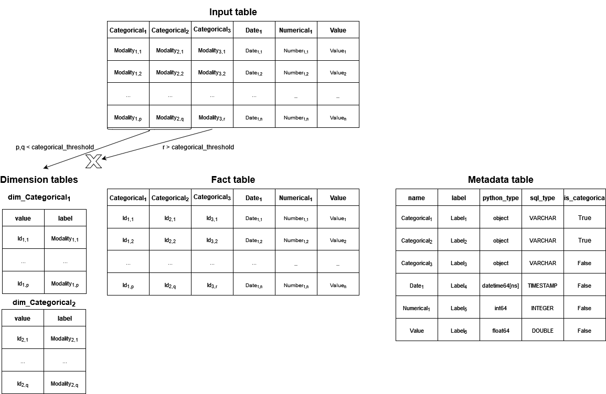

Database schema builder for dashboard template
This package contains utilities to build a specific generic database scheme from a table.
Objectives
This package is built to create :
-
a generic schema to store a table as a database :
- the
metadatatable references general information (label, type etc ...) about each dataframe column ; - the
dimensiontables associate each modality of a categorical variable to anidused in thefacttable ; - the
facttable reflects the information in the original table ;
- the
-
export this schema a relational DuckDB database.

Installation
Package and dependencies
The package is then usable as any other python package.
Parametrisation
File in the config.yaml file :
Documentation
To visualize the documentation :
Usage
Here's an example of how to use the functions in the package:
import pandas as pd
from dashboard_template_database.builders.schema import SchemaBuilder
from dashboard_template_database.builders.tables import DuckdbTablesBuilder
from dashboard_template_database.loaders.local.loader import Loader
# Load a sample DataFrame
loader = Loader()
sample_data = pd.DataFrame({
'Name': ['Alice', 'Bob', 'Charlie'],
'Age': [25, 30, 35],
'City': ['Paris', 'Berlin', 'Madrid']
})
# Initialize the SchemaBuilder
schema_builder = SchemaBuilder(df=sample_data, categorical_threshold=3)
# Build the schema
metadata, dimension_tables, fact_table = schema_builder.build()
# Initialize the DuckDB tables builder
duckdb_builder = DuckdbTablesBuilder(df=sample_data)
# Create the schema in DuckDB
duckdb_builder.build_duckdb_schema()
# Display the schema in DuckDB
duckdb_builder.display_schema()
License
The package is licensed under the MIT License.